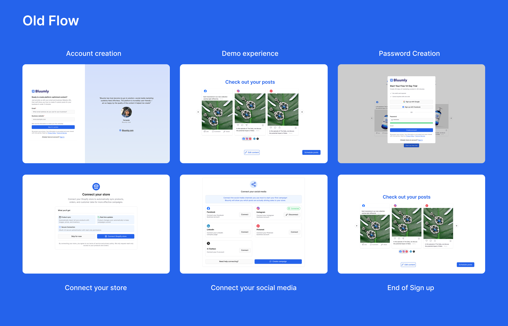
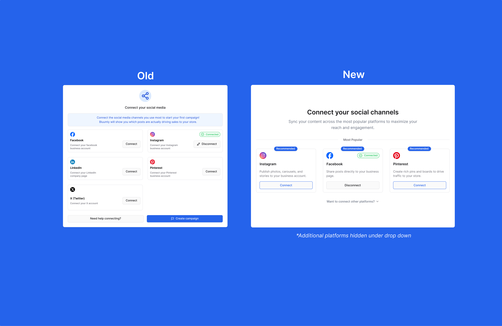

Case Study 01
Signup Flow
Reducing friction in Bluumly's onboarding to fix a broken first impression.

Overview
Bluumly was facing an issue that many startups face: user acquisition and retention were at an all-time low. I met with the team to discuss what we were noticing in user screen recordings and how we could remedy any user pain points.
The Challenge
When looking into Clarity, it was clear that our users were struggling to get a foot in the door. The sign-up flow initially included a demo flow that gave users a quick overview of what Bluumly could offer before prompting them to sign up. This was a pain point that gave users a false sense of accomplishment and a "gotcha" moment, negatively impacting the user experience.

The Solution
I brought the flow to a fellow designer for a fresh set of eyes. His feedback was specific: the Shopify signup process was carrying too many steps — account creation, a demo flow, password creation, a store connection screen, and a social media connection screen, all in sequence. He recommended reducing the social platform options from seven shown at once down to three, with the rest tucked under a dropdown, and cutting the visible signup options down to two: Shopify OAuth and email.
I took that feedback and focused on three goals: reduce steps, move account creation to the start, and strip the nav bar until onboarding was complete.
The biggest win was adding Shopify OAuth — letting users sign up and connect their store in a single click. For social media, I worked with our marketing strategist to narrow the options down to Facebook, Instagram, and Pinterest based on user behaviour, cutting visual clutter and decision fatigue.
AI-Assisted Workflow
Following my session with an outside designer, I brought his feedback directly into a working prototype using Figma Make. Rather than rebuilding the flow from scratch, I used AI to generate a refined iteration of the existing user flow — capturing the structural improvements quickly. From there, I took the core layout and idea as a foundation, then layered in Bluumly's branding guidelines and built out fully editable frames ready for handoff to our front-end developer.

Outcome
- 6 → 3Cut the signup flow from 6 steps to 3, removing the demo redirect, separate password creation, and manual store connection screen
- 01Replaced manual store connection with one-click Shopify OAuth — matching how our actual users, Shopify store owners, already expect to sign in
- 7 → 3Narrowed visible social platform options from 7 to 3, moving the rest under a dropdown to reduce decision fatigue
- 03Stripped the nav bar until onboarding was complete, removing exit points before account creation
Bluumly was still pre-scale at the time of this redesign, so this wasn't about lifting a metric against existing volume — the priority was removing friction before growth, using screen recordings rather than usage data to guide the decisions above.